“It started over sizzling fajitas at El Tiempo and a rainy afternoon at the Houston Zoo where everything went wrong - and nothing mattered.”
A Valentine’s weekend wedding at The Houstonian
As seen in
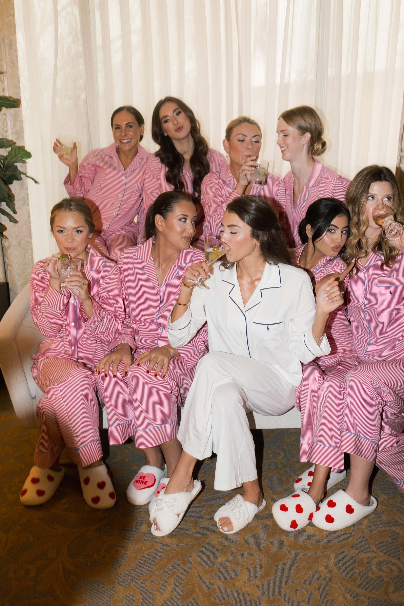

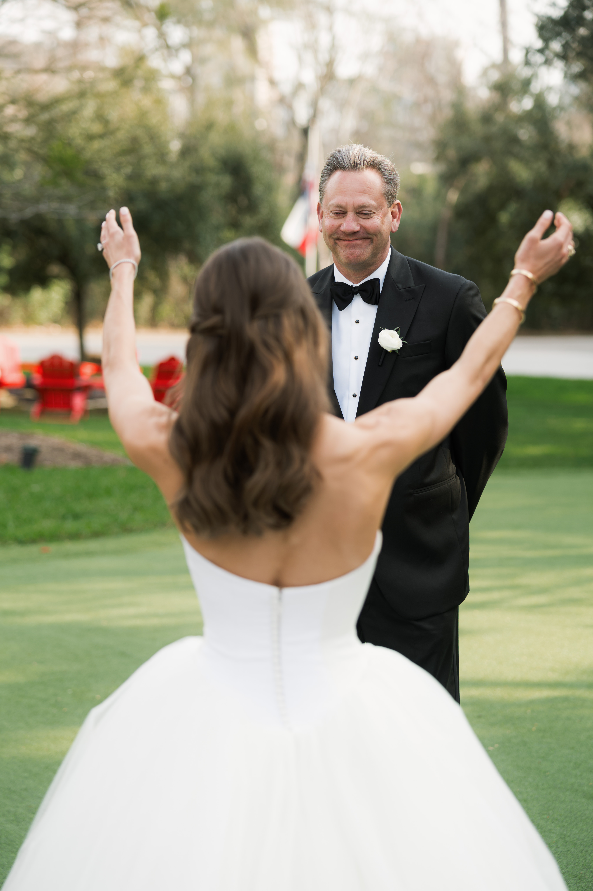
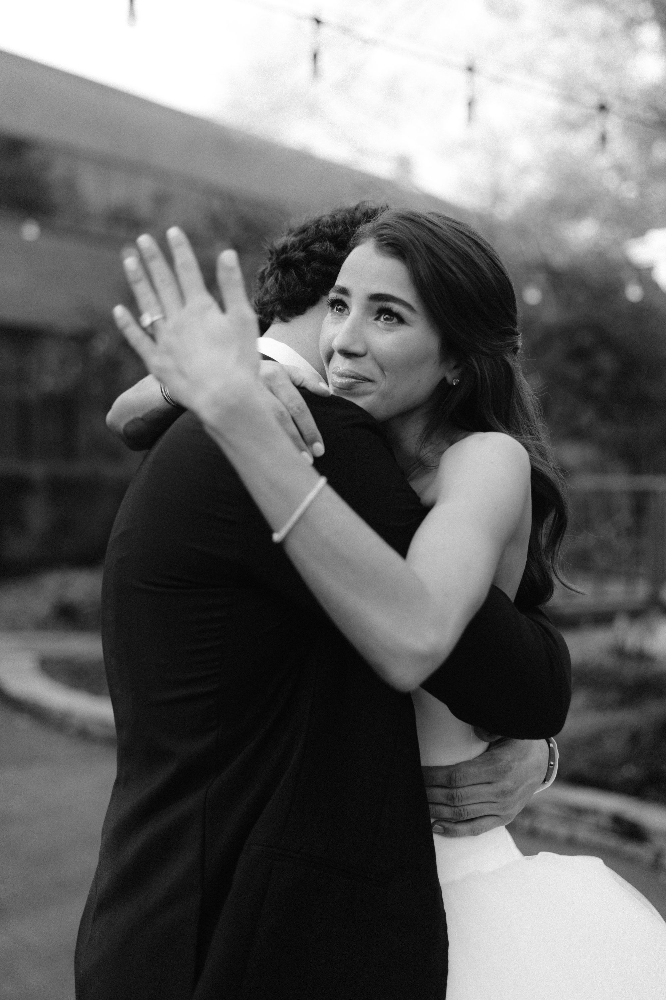
The morning of February 15th inside The Houstonian’s suites - the same quiet laughter that carried them through a dead phone and a downpour at the Houston Zoo, now set against champagne flutes and the careful hands that make everything beautiful.

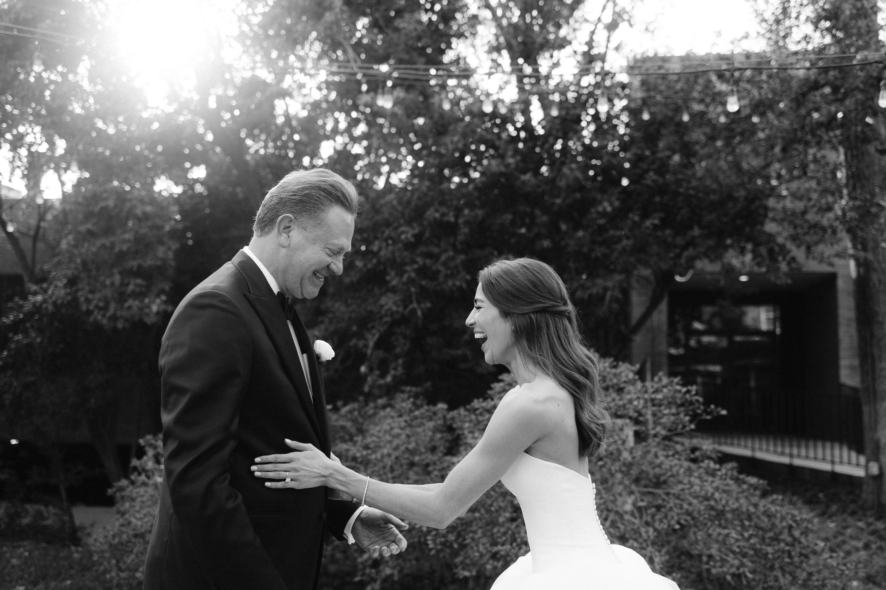


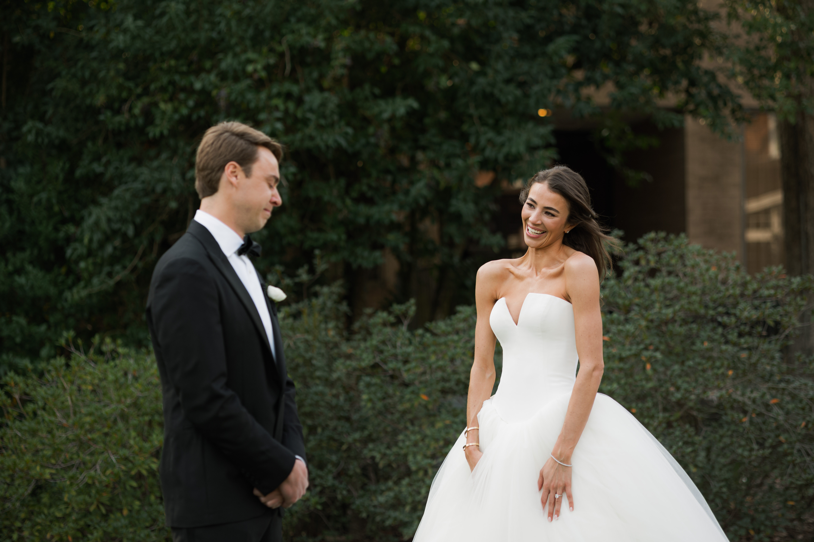

“From marathons in Nashville to golf at Pebble Beach, from Patagonia to Carolina shag dancing - Chase proposed at Hermann Park, right where it all began. The Houstonian’s oak-canopied grounds became their private world.”

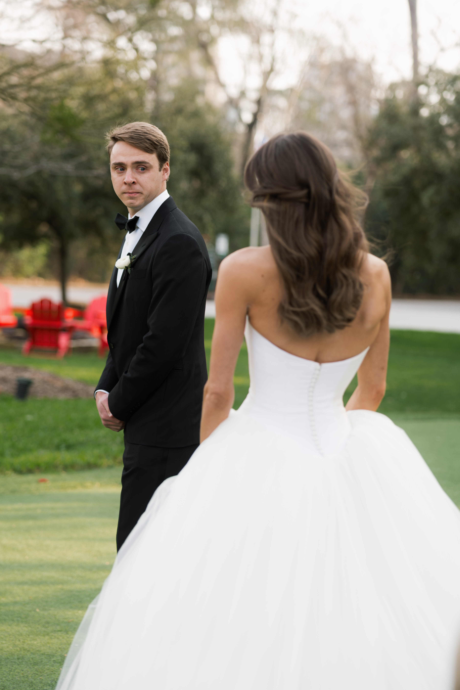

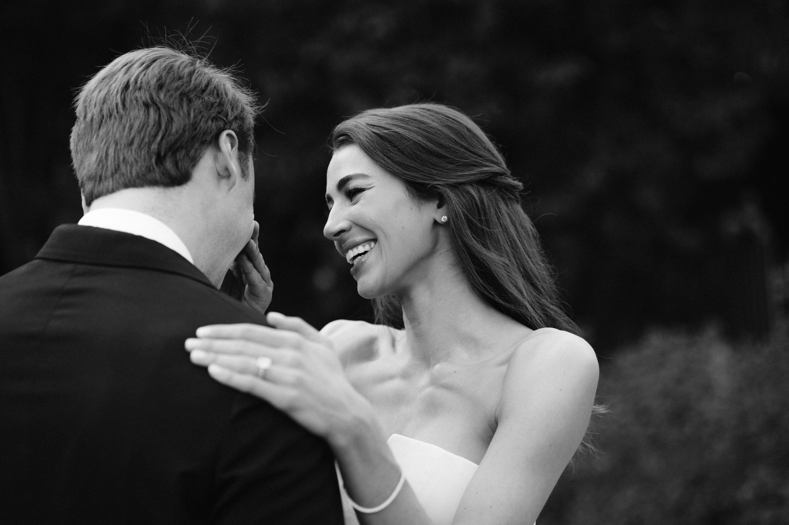

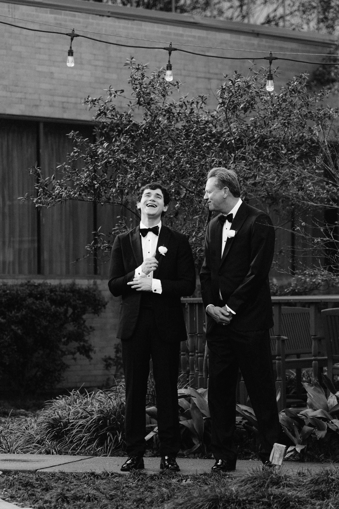


Their wedding day became a local holiday - Valentine’s weekend, candlelit tables beneath The Houstonian’s grand ceilings, and the same families who once swapped cowboy boots and Clemson orange now dancing until the last song.

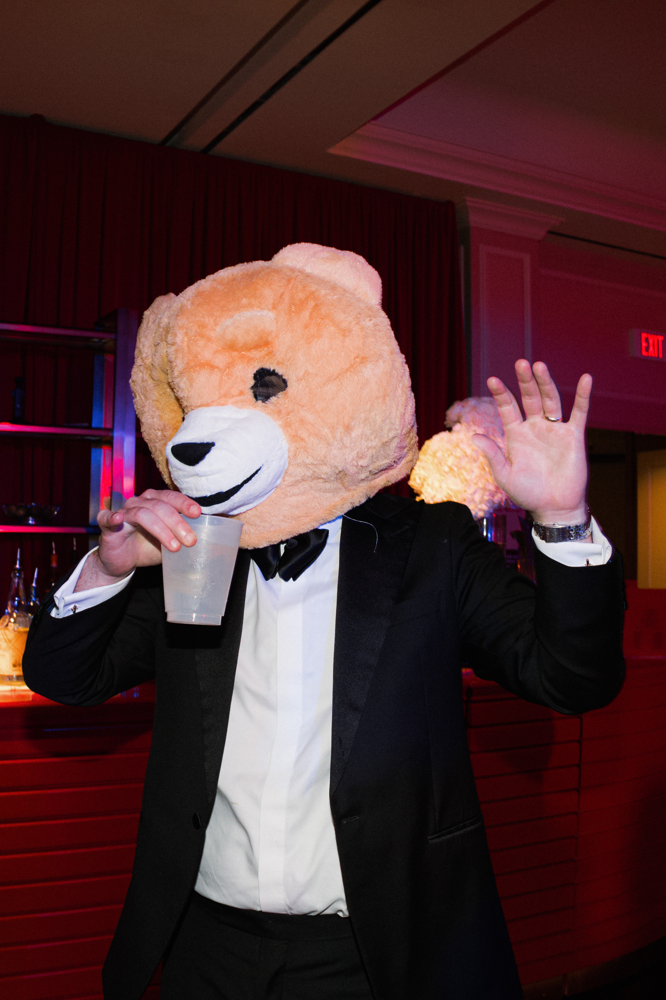

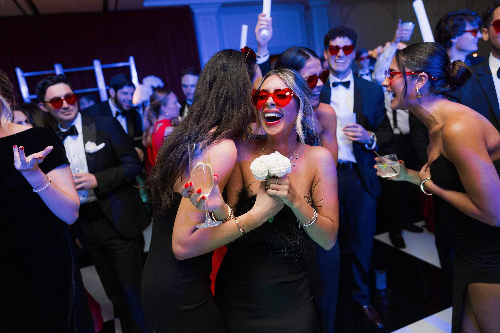


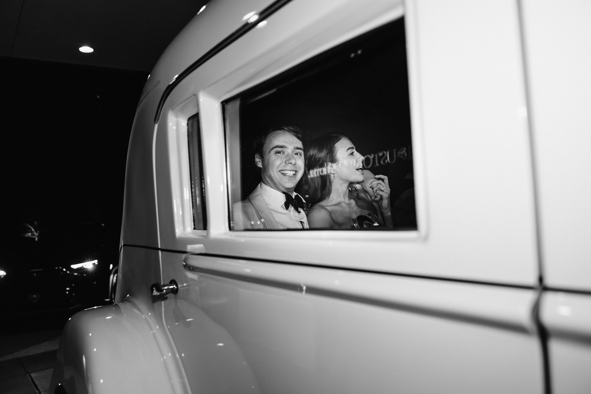